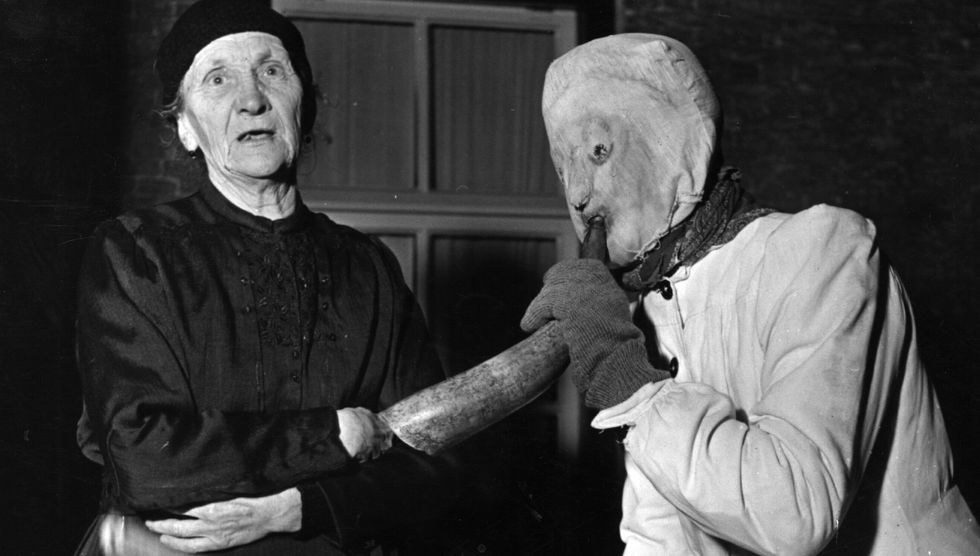
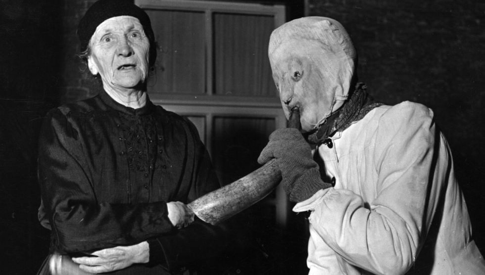

Op Ameland vieren ze geen Sinterklaas, maar Sunneklaas
De meeste mensen zullen nog nooit van Sunneklaas gehoord hebben. En dat is ook precies de bedoeling van de Amelanders.

De meeste mensen zullen nog nooit van Sunneklaas gehoord hebben. En dat is ook precies de bedoeling van de Amelanders.
Op Ameland vieren ze Sinterklaas net een tikkie anders. Ze vieren er Sunneklaas: een mysterieus feest waarbij de eilandbewoners liever niet te veel pottenkijkers trekken. Wie of wat is Sunneklaas? En vanwaar al die geheimzinnigheid?
Over Sunneklaas doen de wildste verhalen de ronde. Zo zouden vrouwen en kinderen gedwongen binnen moeten blijven. Doen ze dat niet? Dan worden ze door mannen met stokken terug naar huis geslagen. En daarbij zouden weleens gewonden kunnen zijn gevallen. 'Dat is mediale uitvergroting', laat historicus en etnoloog Peter Jan Margry weten. 'Op Ameland vieren ze Sunneklaas het liefst zonder buitenstaanders en door dat mysterieuze karakter ontstaan er al snel spookverhalen.' Het gaat er dus niet zo heftig aan toe als de verhalen doen geloven. Maar hoe wordt Sunneklaas dan wel gevierd?
Waar de meeste 'vastewallers' op 5 december pakjesavond vieren, begint het Sunneklaasfeest op het waddeneiland die dag rond 5 uur 's middags. Vanaf dat moment blijven vrouwen en minderjarigen binnen, in zogenoemde 'open huizen'. Dat kan bij iemand thuis zijn, maar ook op bepaalde openbare plekken. Sommige vrouwen steken stiekem over naar een ander huis. Word je gesnapt? Dan word je niet geslagen, maar teruggebracht naar waar je vandaan kwam.
'De grap is om de regels te overtreden, al mag ik dat eigenlijk niet hardop zeggen. Die spanning maakt het feest gewoon hartstikke leuk', zegt Amelandse VVV-directeur Cinto Prosperi in 2011 tegen de NOS. De Amelandse mannen lopen ondertussen verkleed in gewaden en maskers door de straten, vaak met stokken en toeters. Het is de bedoeling om niet herkend te worden. Tijdens het praten zetten de mannen dan ook een gekke stem op. Daarnaast wordt er muziek gespeeld en worden er toneelstukjes opgevoerd. Later op de avond wordt er in de open huizen feest gevierd. Daaraan mogen de vrouwen en minderjarigen ook deelnemen.
Maar vanwaar dan al die geheimzinnigheid? Volgens Margry proberen Amelanders enkel hun traditie in stand te houden. 'Dat er een andere Sinterklaastraditie is ontstaan op Ameland en dat die nog steeds gevierd wordt, heeft te maken met het feit dat Ameland een eiland is. Daardoor is het feest minder onderhevig aan veranderingen en invloeden van buitenaf, en zo kan een traditie langer in stand blijven.' Het is dus niet zo gek dat Amelanders Sunneklaas liever voor zichzelf houden. Daarnaast steken de Amelandse mannen veel moeite in hun kostuum. Die zoeken ze maanden van tevoren al uit. Anderen proberen te raden wie je bent door een manier van lopen of een bepaalde houding. Dat is leuk omdat veel mensen elkaar kennen in de kleine dorpjes. Als er veel toeristen rondlopen, wordt het heel lastig om anderen te herkennen. Dat zou jammer zijn.
Dat Sinterklaas er op Ameland anders aan toe gaat, moge duidelijk zijn. 'Toch stamt ook dit feest af van de originele verhalen over Sint-Nicolaas', vertelt Margry. De goedheiligman was, naast een kindervriend en een beschermer van zeelui en armen, ook huwelijksmakelaar. 'Een oude legende vertelt het verhaal van een arme man die niet genoeg geld had om aan een huwelijkspartner voor zijn dochters te komen. De dochters belandden daardoor bijna in de prostitutie. Totdat Sint-Nicolaas geld door het raam van de man gooide, waardoor hij een bruidsschat had om zijn dochters alsnog uit te huwelijken. De traditie van de chocolade munten komt daar ook vandaan.'
Tot de negentiende eeuw was Sinterklaas niet alleen een feest voor kinderen. Het zoeken naar een geschikte partner speelde ook een rol. Jonge mannen en vrouwen gaven speculaaspoppen of liefdesbriefjes aan degene op wie ze een oogje hadden. Nu Sinterklaas vooral een kinderfeest is geworden, is dat aspect op de meeste plekken verdwenen. 'Maar in relictgebieden, zoals op Ameland, maakt het nog steeds deel uit van de traditie. Op een eiland met een beperkt aanbod van jongeren was het belangrijker om die functies in stand te houden', aldus Margry. Om die reden wordt er tijdens Sunneklaas ook onderscheid gemaakt tussen kinderen en jongemannen. Hofmakerij is iets voor jongvolwassenen. Het is niet passend minderjarigen mee te laten doen aan het verleidingsspel, daarom blijven zij tijdens Sunneklaas binnen.